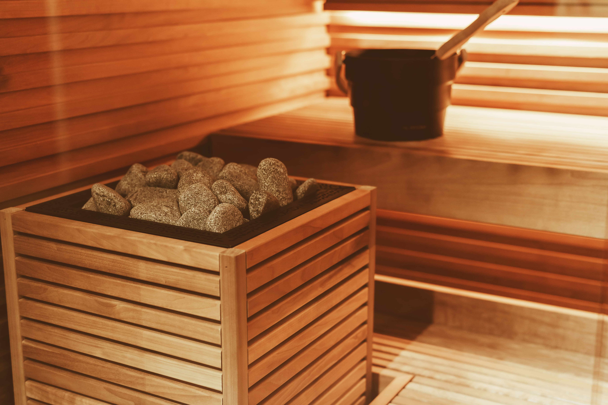

Nagoya
×
Sauna
Why?
「名古屋×サウナ」の訳
Why
Why Nagoya?
名古屋は東京・大阪間にあり、好立地です。
そのため、急いで帰る必要がなく、たっぷりくつろいでから帰宅することができます。
Why Sauna?
サウナ・銭湯と湯上がり飯を済ませれば、家でやることは着替えだけ。
旅の疲れはその日に癒し、楽しい思い出だけを持ち帰ることができます。

一覧
管理者イチ推しお風呂
List

栄
千種
大曽根
守山
今池
心得
気持ちいい入浴のために
Rule
Point 1
入浴前に水分補給
サウナの利用に関わらず、入浴中は汗をかきます。脱水症状を防ぐため、湯上がり飯をおいしく食べるためにも、しっかり水分を取りましょう。
Point 2
入浴前に体を洗う
湯船に入る前に体を洗うのは常識ですが、サウナ室、水風呂に入る前に体を洗わない人がちらほら。サウナ前は体の水滴を拭き、水風呂の前はかけ湯をしましょう。
Point 3
我慢しない
高温の環境に居るのは体に負担がかかります。我慢しながら長く入るのではなく、気持ちよくなるまで入ることで心の疲れを取りましょう。
×
Sauna Lab
1時間1,100円
地下鉄栄駅から徒歩9分

本格フィンランドサウナとコワーキングスペースが揃った快適空間。
本格フィンランド料理も楽しめます。
×
×
×
×